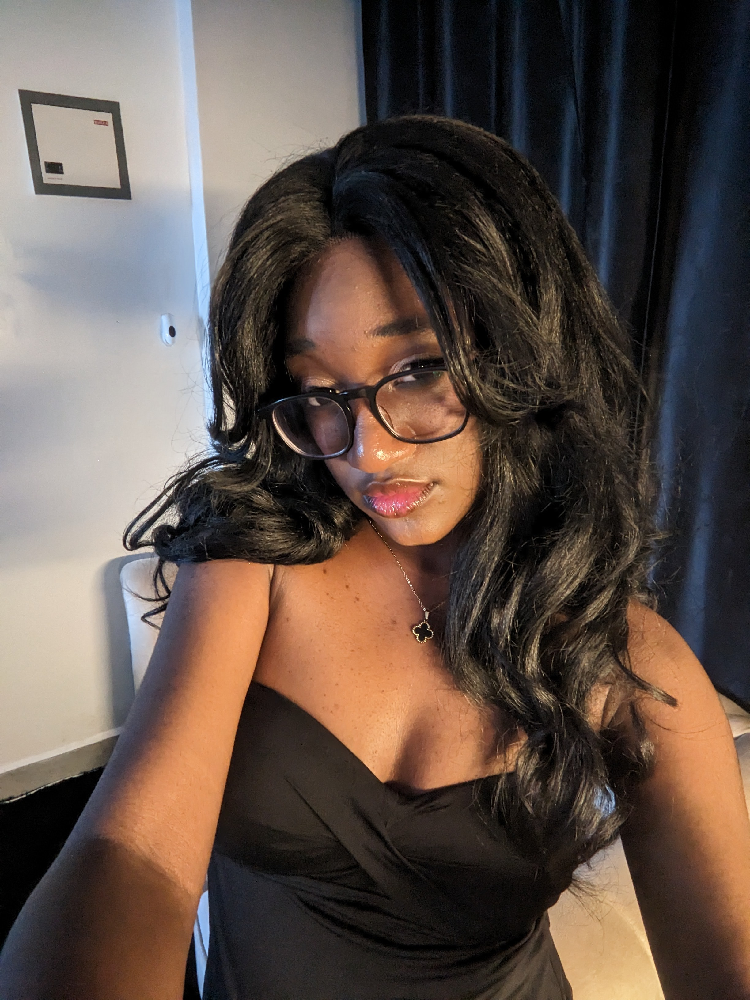

Accueil / À propos

À propos
Daniella Benishay
Autrice de romans où les personnages avancent avec leurs failles, pas malgré elles.
Je m'appelle Daniella et j'écris depuis aussi longtemps que je m'en souvienne — même si me lancer sur Wattpad est, pour moi, une toute première aventure.
J'aime créer des personnages complexes, imparfaits et profondément humains. Ceux qui cachent des secrets, portent des blessures, et doivent parfois traverser l'obscurité avant de retrouver leur chemin.
Mon rapport à l'écriture
Mon rapport à l'écriture
Écrire, pour moi, c'est habiter pleinement mes personnages — ressentir leurs doutes, leurs colères et leurs élans avant même de coucher leurs mots sur la page. Chaque histoire naît d'une émotion que je cherche à comprendre en la racontant.
Je n'écris pas pour donner des réponses, mais pour poser les bonnes questions : jusqu'où peut-on aimer quelqu'un qui nous blesse ? Que cache-t-on quand on prétend aller bien ? C'est dans cet entre-deux que mes récits prennent forme.
Mon univers littéraire
Mon univers littéraire
Mes histoires se déploient dans des zones grises, là où les certitudes vacillent. Les personnages tourmentés, les relations intenses et les secrets qu'on tait y trouvent une place centrale — jamais pour choquer, toujours pour révéler quelque chose de profondément humain.
Si vous aimez les intrigues captivantes et les montagnes russes émotionnelles, vous êtes au bon endroit. Merci de faire partie de cette aventure : chaque lecture, chaque vote et chaque commentaire compte énormément pour moi.
Me suivre
Continuons cette histoire ensemble
Retrouvez l'intégralité de mes romans et suivez leur publication chapitre après chapitre sur Wattpad.